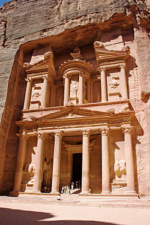

Petra (Arabic: ٱلْبَتْراء, romanized: Al-Batrā; Ancient Greek: Πέτρα, lit.'Rock'), originally known to its inhabitants as Raqmu (Nabataean Aramaic: 𐢛𐢚𐢒 or, *Raqēmō), is an ancient city and archaeological site in southern Jordan. Famous for its rock-cut architecture and water conduit systems, Petra is also called the "Rose City" because of the colour of the sandstone from which it is carved. The city is one of the New 7 Wonders of the World and a UNESCO World Heritage Site
